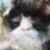
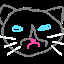
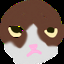
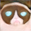
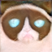

GAN Photo Editing
Author: Kelvin Kang
Here we try to edit a photo not in pixel space but in a Generative Adversarial Network (GAN) latent space.
We use a pre-trained GAN such as StyleGAN as our generator. The reference image is first inverted back to the GAN's latent space, then it is moved along the latent space and generated again. This way we will edit images that lie along the generated image manifold.
Using an optimizer such as LBFGS, we find the latent code z that best reconstruct an image when passed through a generator. Below is the input reference image that we try to find the best latent code z.

| Loss Used | StyleGAN z | StyleGAN w | StyleGAN w+ | VanillaGAN z |
|---|---|---|---|---|
| L1 Loss | ||||
| Perceptual Loss | ||||
| L1 + Perceptual |  |
Between the different loss functions, using L1 loss only produces slightly blurry images. This is expected as Lp losses have an averaging effect that causes blurry images. Using perceptual loss only creates good cat images, but it is lacking in color accuracy. This is expected as we are using a slightly deep feature activation map (conv_5), which from hw4 we know does not contain detailed color information. Therefore, I find that we best loss is combining the perceptual and the L1 loss.
There are obvious quality differences between the vanillaGAN and StyleGAN. This is expected as vanillaGAN is a simple and relatively shallow network. HW4 has shown that this model is limited in its ability to produce realistic images. Images from VanillaGAN is more blurry, with less details such as the eye color and furs.
There are only minor differences between StyleGAN z, w, and w+ space. All three latent codes can reconstruct good images. However, I find that w and w+ latents produce slightly better images, this can be seen when you compare the cat's eyes. z latent does not produce as sharp of eyes than w and w+.
I find that using L1 + Perceptual loss with StyleGAN w+ latent space produces the best results. As seen below, the cat pose looks almost identical to the reference image, and details such as the greenish background is preserved. The Reconstruction took 30.1 seconds to complete 1000 iterations.
After finding the latent code of input images, we can take two input images, find their latent codes and interpolate between the two codes. I used StyleGAN w+ latent code with L1 + Perceptual Loss to perform the interpolations. The results look good, with the intermediate images still looking realistic. This is the advantage of GAN Photo Editing, the generator prevents 'strange-looking' outputs as we do not directly edit on the pixel space. Below are the results of some of them.


In this section we use a user-defined scribble of a cat and uses it as a constraint when reconstructing a cat image. Concretely, we use the user sketch outline and color as an L1 loss for the output image. The sketch outline is also used as a mask for the perceptual loss. One key finding is that z latent space is a poor choice for this task. Below are the results of the generated output.

This is in contrast to the images generated by w or w+ latent space. This is most likely because the learnt intermediate latent space w that is obtained by passing z through a series of FC layers 'unwraps' the z latent space, no longer restricting it to a Gaussian distribution that has to contain good representations in all direction and values. The result is that w and w+ space has a more disentangled representations which allow the network to produce realistic images as it can more easily adjust certain properties of the image. Below are images generated with w space (left) and w+ space (right)
From the examples above, the w+ space slightly over performs the w space, hence we will use w+ space for the rest of the examples. However, even the w+ space sometimes struggle to create good images when the user input drawings do not conform well to a real cat image. For example, the drawings below has a 'cartoon-ish' shapes, and this creates a constraint on the network, making it difficult to generate realistic images.

In fact, generally the network can produce better images when the user input drawings are sparse. This is because we do not over constraint the network, allowing it more freedom to create a realistic image. Below are some examples of dense drawings that failed to produce good images.
 


I used the higher resolution dataset to produce the output images.